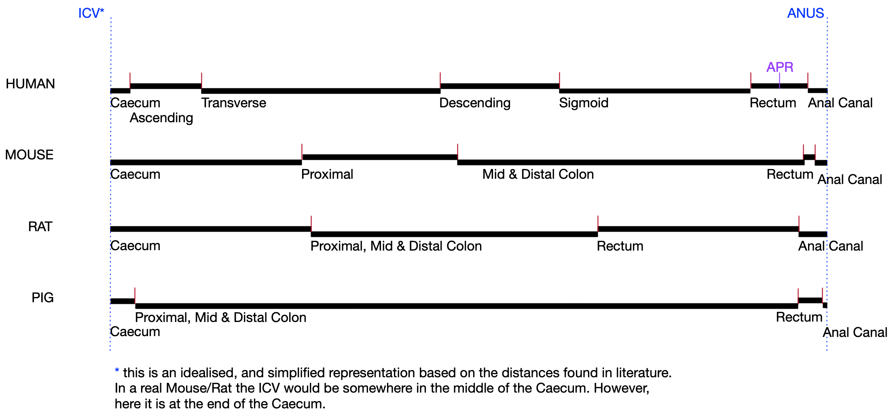

The Comparative Workbench for Atlas Data
A Summary of the Comparative Workbench for Atlas Data Project
Project Summary
The Human Cell Atlas resource will deliver single cell transcriptome data spatially organised in terms of gross anatomy, tissue location and with images of cellular histology. This will enable the application of bioinformatics analysis, machine learning and data-mining revealing an atlas of cell types and sub-types and ultimately disease conditions. However, to obtain an understanding of specific conditions, pathologies and histopathological phenotypes with their spatial relationships and dependencies we need a spatial descriptive framework to enable integration and analysis in spatial terms. In addition, tools are needed for the clinical domain expert to retrieve, analyse, visualise, and annotate the data and in particular sharing for expert-led collaboration, annotation and analysis. This is particularly important in the context of the histology of normal and diseased tissues within and across species to fully understand animal models of disease and for integration with human data.
Project Aims
We propose to extend tools and standards developed in the context of the Edinburgh Mouse Atlas with two specific aims:
- To implement a focussed data visual-analytics “workbench” (Comparative Workbench for Atlas data or CWA) to provide the capability for clinical pathologists to analyse, annotate and compare complex cell-level imaging in conjunction with sequencing data analysis of the same or related tissues. This will provide access to the atlas data in tabular views enabling comparison between individuals, time-course data and cross-species coupled with management of configuration and “state” for tracking, saving and sharing the analysis process.
- To develop a conceptual coordinate model of the application domain (small and large intestine) for spatial annotation of data samples and to develop the spatial descriptors for data retrieval, analysis and visualisation. The model will encode biologically and clinically relevant locations and regions and when a full HCA atlas framework becomes available the biological conceptual model will be mapped to the real-space coordinate frame. This mapping from biologically natural coordinates to real-space image coordinates has been demonstrated for the mouse embryo and the same techniques will apply here.
For specific focus, the CWA context will be normal small intestine and colon and pathology of Familial Adenomatous Polyposis (FAP) due to inherited APC mutations. For this we have tissue and data across four species: Min mice, Pirc rats, APC-mutant pigs and FAP humans. We will extend our OMERO-based prototype to provide a configurable tabular viewer of multiple “view-cells”. The CWA enables a structured visual-analysis that utilises both human and animal data to interrogate and understand normal physiological and pathological mechanisms. The data-samples and image-data will be annotated in spatial terms using the conceptual atlas framework and ontologies to develop the spatial-description standards needed to annotate both sample-based and image-based data and enable intraand inter-species query and analysis. The gut exemplar provides a conceptually “simple” biological model with a complex mapping to adult anatomy that will test the requirements for spatial annotation and semantic integration needed for all tissues to deliver a fully integrated atlas framework enabling machine learning to cross the divide from sequence analysis to spatial organisation.
Conceptual Coordinate Model
The proposed model:

Mike Wicks, 3rd March 2022